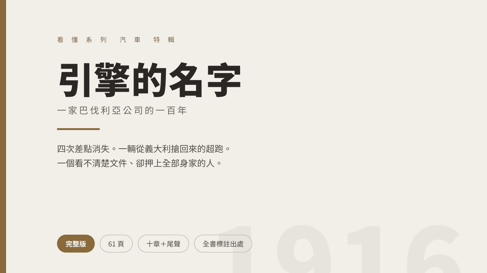
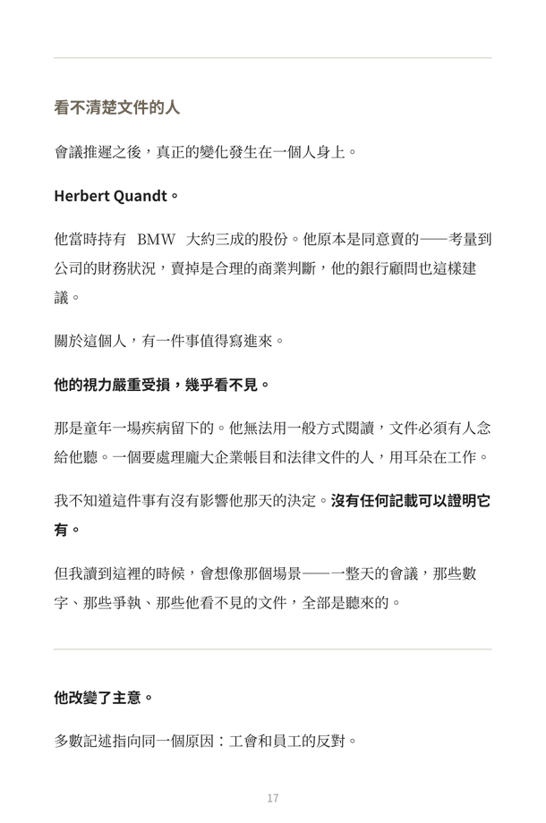
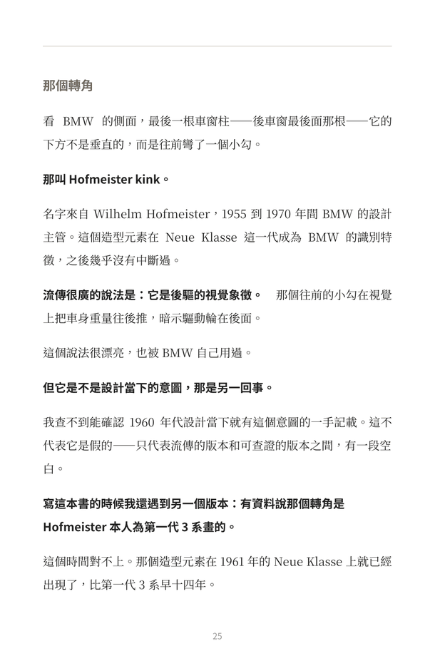
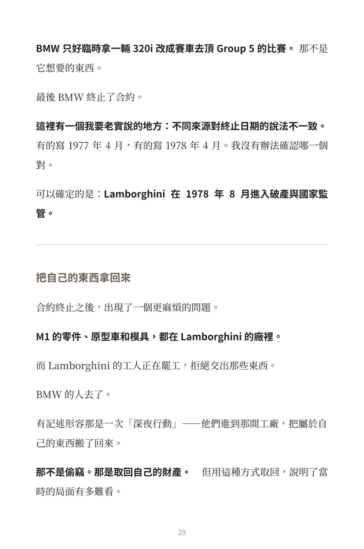

那場十小時的股東會，是被一群小股東擋下來的
會上有一件事被翻了出來：管理層在 1958 年的資產負債表上處理了 BMW 700 的開發費用，讓公司的帳面比實際更糟——而更糟的財務狀況，正好支持「非賣不可」這個結論。而 BMW 700 正是當時唯一賣得動的產品。
The Vault / BU-04 / 看懂系列．汽車特輯




左右滑動查看內頁 · 內頁實拍。
BU-04 · 汽車特輯 · 已上架
「1959 年救下 BMW 的那個人，幾乎看不見。文件必須有人念給他聽。」
一家巴伐利亞公司的一百年。完整版，十章加尾聲。
這是知識整理型作品，不是品牌宣傳冊。
全書標註出處，並區分「查得到的版本」與「流傳的版本」。不提供購車建議，不對任何車款的優劣表示意見。
NT$ 450 一次付清
結帳與檔案交付由 Gumroad 處理，本站不接觸你的付款資訊。
Four Times
每一次的解法都不一樣。書裡不會告訴你這四次背後有某種一以貫之的精神——把它們寫成同一種韌性，是事後才做得出來的整理。
Inside
會上有一件事被翻了出來：管理層在 1958 年的資產負債表上處理了 BMW 700 的開發費用，讓公司的帳面比實際更糟——而更糟的財務狀況，正好支持「非賣不可」這個結論。而 BMW 700 正是當時唯一賣得動的產品。
Herbert Quandt 的視力嚴重受損，文件必須有人念給他聽。一個要處理龐大企業帳目與法律文件的人，用耳朵在工作。他違背銀行的建議把持股加到五成——而所有的專業意見都告訴他不要。
M1 原本要由 Lamborghini 生產。合作垮掉之後，零件、原型車和模具都還在對方廠裡，而工人正在罷工拒絕交出。那不是偷竊——但用這種方式取回，說明了當時的局面有多難看。
X5 的開發期完全落在 BMW 擁有 Land Rover 的那幾年。陡坡緩降、越野引擎管理、上下對開的尾門，都來自 Range Rover。一家從沒做過四驅休旅車的公司，跳過了學習曲線。
Standard
品牌史有一個共同的問題：流傳最廣的版本，往往是行銷部門寫的。那些故事有一部分是真的，但經過幾十年的轉述與粉絲補完，已經很難分辨哪些查得到出處。
這本書對每一段用三個標準：查得到出處的標出處；流傳很廣但查不到的，標明是流傳版本，並盡量說明它是怎麼形成的；不好寫的部分，照樣寫。
書中處理了戰時強制勞動的段落，並依公開的企業檔案與獨立史學調查，把公司本身與股東家族的財富來源分成兩條不同的線說明——這兩件事在中文內容裡經常被混為一談。
Editions
完整版包含兩本免費書的全部內容，並補上 M 部門的成立、M1、X5，以及 Herbert Quandt 這個人的章節。如果你已經讀過免費版，這一本是延伸；如果還沒讀，直接讀這一本即可。
免費版 01
31 頁。公司如何存續。
免費版 02
18 頁。一款車的七個世代。
完整版
61 頁。前兩本加上 M 部門、M1、X5 與關鍵人物。
FAQ
不會。本書為知識整理型作品，不提供購車建議，不對任何車款的優劣表示意見，也不推薦任何產品。談到現行產品時只陳述公司公開發布的內容，不評價成效。
完整版包含那兩本的全部內容，並新增 M 部門、M1、X5 與關鍵人物的章節。如果你只想看新增的部分，可以先讀免費版判斷是否合口味再決定。
全書標註出處，內容綜合自公開的企業檔案、獨立史學研究、官方紀錄與公開報導。查不到出處的流傳說法會明確標示為流傳版本，並盡量說明它是怎麼形成的。
不是。作者非汽車工程師、非產業分析師，也非史學研究者。這本書的價值不在於作者懂多少，而在於把散在各處的說法查了出處、比對過，並標明哪些查得到、哪些只是流傳。
本商品為非以有形媒介提供之數位內容，依《消費者保護法》第 19 條及相關準則，經你於結帳前明示同意後發送存取權限者，不適用七日解除權。惟檔案無法開啟、內容損毀或交付品項錯誤等重大技術瑕疵，仍可於 7 日內來信申請修復或退款。
看懂系列．汽車特輯
61 頁 PDF 加 EPUB，十章加尾聲，全書標註出處。